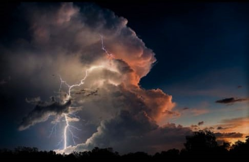

a storm is any disturbed state of an environment or an astronomical body's atmosphere
especially affecting its surface, and strongly implyingsevere weather
Storms are created when a centre of low pressure develops with a system of high pressure surrounding it
A thunderstorm is a storm that occurs in cumulonimbus clouds and produces lightning and thunder

strong thunderstorms(supercells) can produce strong winds, heavy rain, flooding hail and tornadoes
It may be marked by significant disruptions to normal conditions such as strong winds, tornadoes, hail, thunder,
and lightning, heavy precipitation, freezing rain or wind transporting some substance such as dust in a sandstorm
Storms have the potential to harm lives and property via storm surge, heavy rain or snow causing flooding, lightning
wildfires or wind shear
heavy snowfall can cause special recreational activities to take place which would not be possible otherwise like skiing